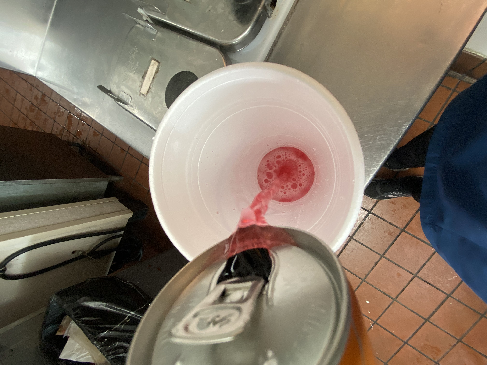

I picked Sonic’s Redbull Slush because it has recently came out (currently only advertised on the app) and it is amazing. We have the original redbull’s and strawberry-apricot. It is simple to make if you have the ingredients. Although it sounds like a weird flavor it is honestly a great slush and I 100% recommend it.
Ingredients
Allergies: Caffiene
While I am using my work machine it is possible to do at home. There are many types of slushie machines you could order on Amazon or find in stores like Walmart or Target. In this recipe we will be mixing both Redbulls together.
In a 20oz cup pour 2oz of strawberry apricot redbull
Pour 2oz of the original in your 20oz cup
Now put in the slush
Add any topping, get a straw & enjoy!